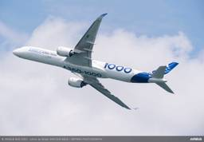
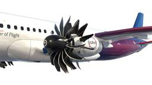
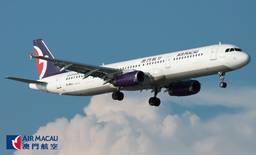
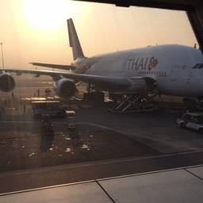

sky-budget スカイバジェット
https://sky-budget.com
お得で役立つ世界の航空情報をいち早く発信！
フィード

エアバス、A350-2000の開発の可能性が高まる 年内に正式決定も
sky-budget スカイバジェット
エアバスは、A350-1000型機の長エアバス、A350-2000の開発の可能性が高まる 年内に正式決定も first appeared on sky-budget スカイバジェット.
13分前
ジップエア、2026年夏ダイヤでも成田～バンクーバー線を増便
sky-budget スカイバジェット
ジップエアは、2026年夏ダイヤでも東ジップエア、2026年夏ダイヤでも成田～バンクーバー線を増便 first appeared on sky-budget スカイバジェット.
3時間前

先週のアクセス上位記事TOP10 (2026年2月1日～2026年2月7日)
sky-budget スカイバジェット
先週(2026年2月1日から2026年先週のアクセス上位記事TOP10 (2026年2月1日～2026年2月7日) first appeared on sky-budget スカイバジェット.
5時間前
羽田空港免税店、昨年12月の中国人利用者の売上が前年同月比で9億円減
sky-budget スカイバジェット
羽田空港の免税店を運営する日本空港ビル羽田空港免税店、昨年12月の中国人利用者の売上が前年同月比で9億円減 first appeared on sky-budget スカイバジェット.
1日前
サウディア、150機規模の機材発注に向けメーカーと協議を開始
sky-budget スカイバジェット
サウジアラビア航空（サウディア）は、機サウディア、150機規模の機材発注に向けメーカーと協議を開始 first appeared on sky-budget スカイバジェット.
1日前

マカオ航空、日本路線を対象に往復17,600円からのセールを開催中
sky-budget スカイバジェット
マカオ航空は、東京/成田・大阪/関西～マカオ航空、日本路線を対象に往復17,600円からのセールを開催中 first appeared on sky-budget スカイバジェット.
1日前
スカンジナビア航空機が誤って誘導路で離陸滑走するトラブルが発生
sky-budget スカイバジェット
現地時間2026年2月5日、スカンジナスカンジナビア航空機が誤って誘導路で離陸滑走するトラブルが発生 first appeared on sky-budget スカイバジェット.
1日前

中部国際空港、NiziUフォトカードを配布するキャンペーンを開催
sky-budget スカイバジェット
中部国際空港セントレアは、人気9人組ガ中部国際空港、NiziUフォトカードを配布するキャンペーンを開催 first appeared on sky-budget スカイバジェット.
2日前
日本空港ビルデング、銀座三越の市中免税店から撤退
sky-budget スカイバジェット
日本空港ビルデングの連結子会社であるJ日本空港ビルデング、銀座三越の市中免税店から撤退 first appeared on sky-budget スカイバジェット.
2日前
マニラ空港、3月29日をもってターボプロップ機の運用が不可に
sky-budget スカイバジェット
マニラのニノイアキノ国際空港は、202マニラ空港、3月29日をもってターボプロップ機の運用が不可に first appeared on sky-budget スカイバジェット.
2日前